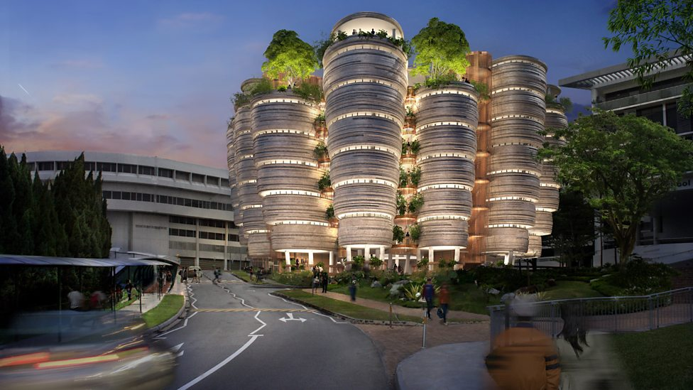

My Story
I received my Bachelors in chemistry at Harvard University and graduated in 2000. Afterwards I studied at Massachusetts Institute of Technology and Woods Hole Oceanographic Institution, where I graduated from in 2007 with a Ph.D in chemical oceanography.
Throughout my career in research, I've focused on studying Geochemistry, Climate, Oceanography, Climate Reconstruction, and Paleoclimatology to name a few.
I executed projects and research on Reconstructing Seasonal Climate Variations in the Indo-Pacific region, Coral-based Climate Variability in the Eastern Bay of Bengal, and upwelling and climate change of the past 500 years in Northern Philipines.

Research Interests
My research is primarily focused on coral geochemistry. I'm looking to understand and use it to discover the history of ocean-atmosphere interactions, climate behavior, and pollution over the past 500 years.
My team and I use paleoclimate proxies in coral skeleton (e.g., stable isotopes) to reconstruct the climate of the last 500 years. Our group utilizes coral skeletons as a means to study the records of environmental conditions. This provides insight into climate behavior on seasonal to decadal time scales. I strive to improve our understanding of the influences biological calcification on chemical fossils to improve the reliability of biogenic carbonate reconstructions.
In the past five years, my focus has been on understanding how changes to mean sea surface temperature, salinity and circulation interact with the Southeast Asian Monsoon system. As warm water from the Pacific Ocean is pushed through the marginal seas of Southeast Asia towards the Indian Ocean, heat is transferred from the ocean to land driving precipitation patterns. Understanding how these systems have changed and interacted in the past will be critical to predicting climate in the future.


Nanyang Technological University
I have been working as an associate professor at NTU since 2012. The courses I teach include Oceanography which seeks to explain the physical and biological properties and phenomena of the sea. This course is designed to present an integrated overview of the principles and concepts of the geology, chemistry, physics, and biology of the world's oceans. The discussion of physical oceanography includes large-scale patterns, ocean circulation, as well as small-scale phenomena such as waves. In addition, I teach the environmental sustainability course. Environmental science and sustainability courses aim to address the challenge of balancing short-term human needs with long-term health and needs of the environment and its systems.

University of Hong Kong
I worked as an assistant professor within the Department of Earth Sciences from 2008 to 2012. The courses I taught include Oceanography, Climate and CLimate Change, and Introduction to Environmental Science. Environmental Studies concentrates on analyzing the relationship between human beings and their environment. The course is designed to present a study of patterns and processes in the natural world and their modification by human activity.

Lamont Doherty Earth Observatory of Columbia University
I’ve worked as an Adjunct Associate Research Scientist in Lamont Doherty Earth Observatory of Columbia University from 2016.